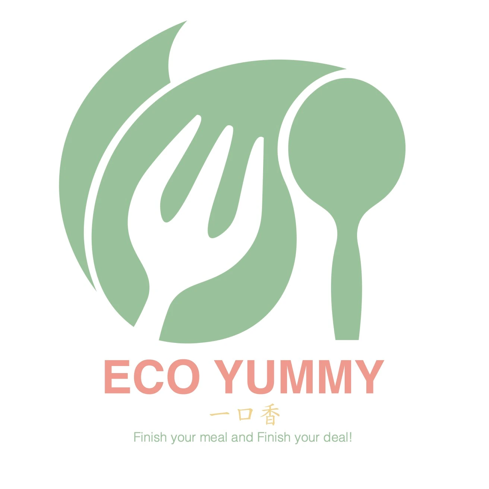

01
Concept Direction
Defined the product idea around edible utensils, sustainability, food experience, and reducing single-use waste through a clearer brand story.
A conceptual branding project for edible utensils, developed through product positioning, visual identity, moodboard exploration, packaging direction, and high-fidelity brand presentation.


EcoYummy is a conceptual product branding project built around edible utensils as an eco-friendly alternative to disposable plastic tableware.
The project is not only a logo design. It presents a complete brand-making process, including product concept, moodboard research, visual tone, logo direction, packaging thinking, and final mockup presentation.
The goal was to create a friendly, memorable, and environmentally conscious brand that connects sustainability with a playful food experience.
A sustainable food-related product concept focused on edible utensils and reducing single-use plastic waste.
Developed the brand through research, moodboards, logo exploration, color direction, packaging thinking, and polished presentation visuals.
Adobe Illustrator, Adobe Photoshop, and Procreate.
EcoYummy is based on a simple idea: everyday utensils can be useful, edible, and environmentally responsible at the same time.
The visual direction needed to feel sustainable without becoming too technical or serious. I used a warm, friendly, and food-related tone to make the concept approachable for everyday audiences.
This concept guided the name, logo style, color choices, packaging mood, and the final presentation mockups.

The project was developed as a branding process, moving from concept direction and visual research into identity design and high-fidelity presentation.
Defined the product idea around edible utensils, sustainability, food experience, and reducing single-use waste through a clearer brand story.
Explored natural textures, eco-friendly color palettes, food imagery, typography direction, and the overall personality of the brand.
Developed the logo and visual system, then applied the concept into mockups to show how EcoYummy could appear as a believable product brand.
This project shows how design can communicate a product idea, make a sustainable message easier to understand, and turn a classroom concept into a more complete brand presentation.
Selected visuals showing the EcoYummy branding process, from moodboard exploration to logo direction and high-fidelity product presentation.
The final EcoYummy concept presents a sustainable product idea through a clear and approachable brand identity. This project demonstrates my ability to move from concept direction and visual research into identity design and polished presentation.